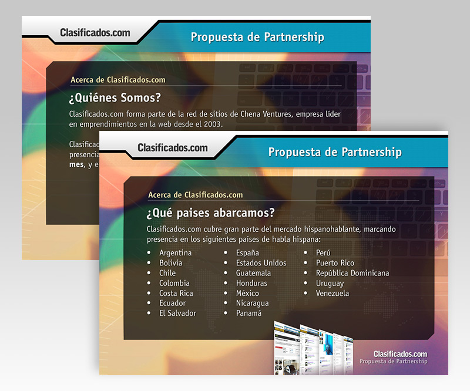

Diseño.
Es un aprendizaje, familiarizarse con las limitaciones de cada medio, y como todo aprendizaje está bueno. El sitio terminó vendiendose, así que supongo que la presentación cumplió con su objetivo. Mentira, no tengo idea de si esto tuvo algo que ver, pero suena bien.
